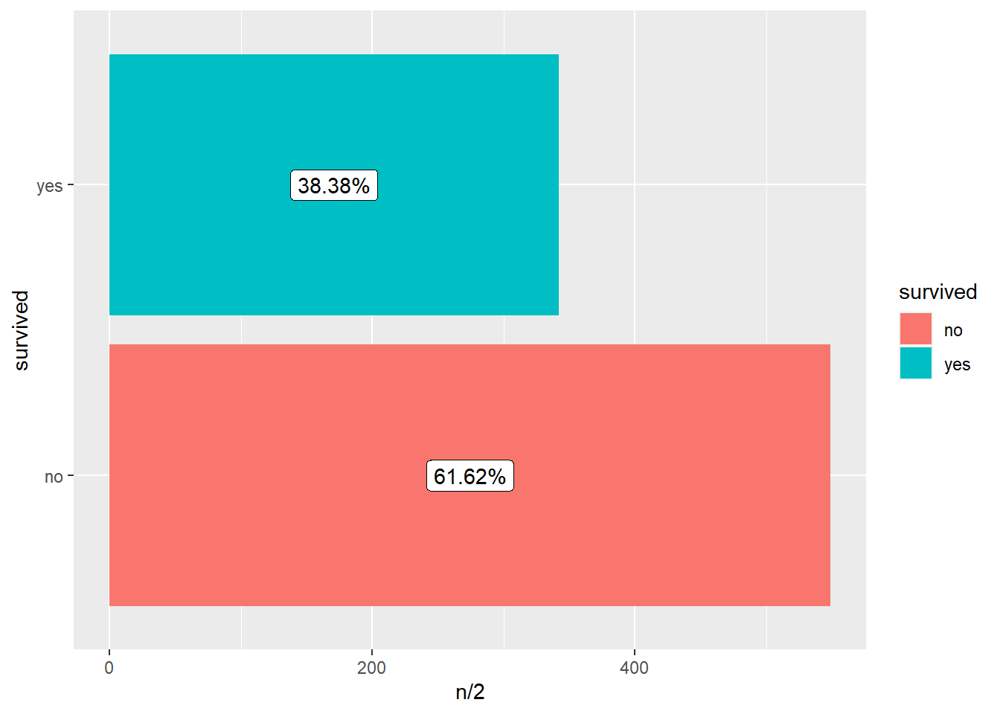
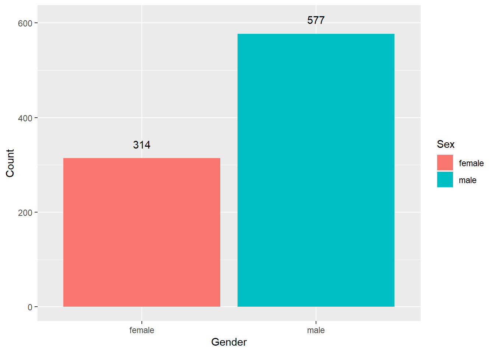
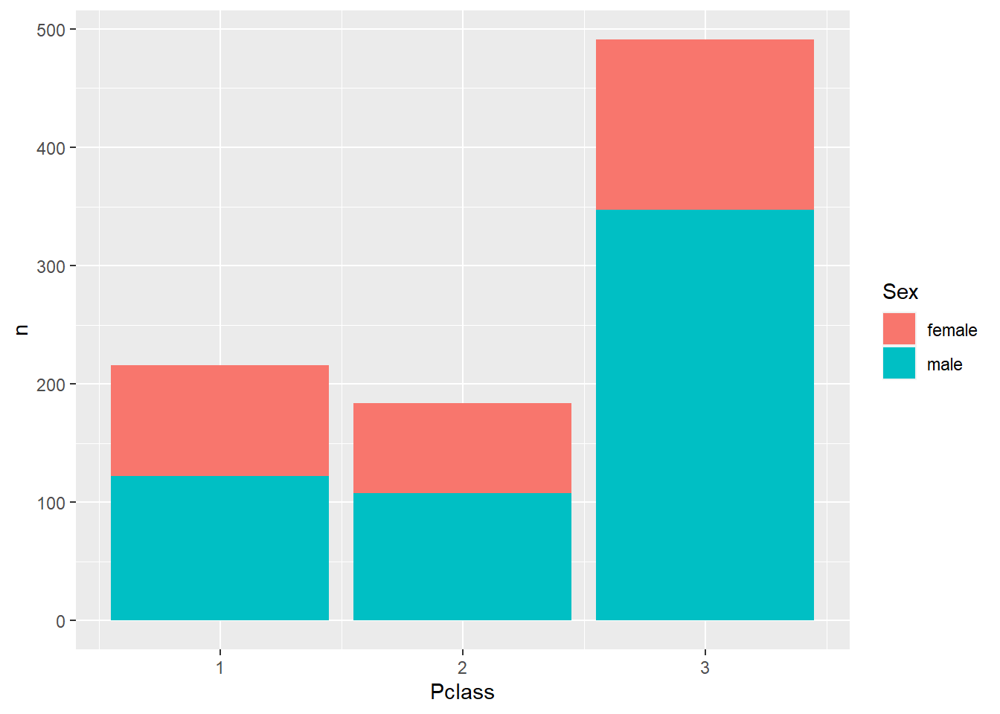
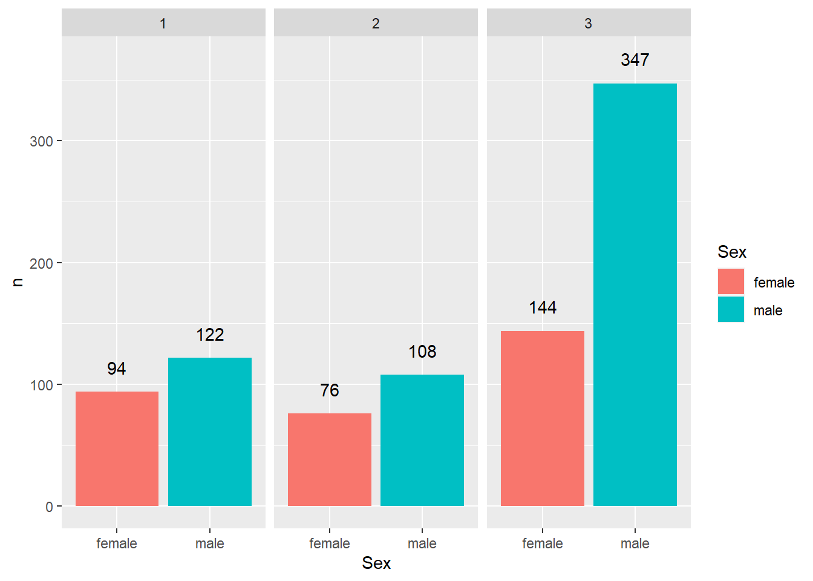

# Load required packages
library(tidyverse)
library(knitr)
# Read in the data
titanic <- read_csv("https://raw.githubusercontent.com/nt246/NTRES-6100-data-science/master/datasets/Titanic.csv")
# Let's look at the top 5 lines of the dataset
head(titanic, n = 5) %>%
kable()| PassengerId | Survived | Pclass | Name | Sex | Age | SibSp | Parch | Ticket | Fare | Cabin | Embarked |
|---|---|---|---|---|---|---|---|---|---|---|---|
| 1 | 0 | 3 | Braund, Mr. Owen Harris | male | 22 | 1 | 0 | A/5 21171 | 7.2500 | NA | S |
| 2 | 1 | 1 | Cumings, Mrs. John Bradley (Florence Briggs Thayer) | female | 38 | 1 | 0 | PC 17599 | 71.2833 | C85 | C |
| 3 | 1 | 3 | Heikkinen, Miss. Laina | female | 26 | 0 | 0 | STON/O2. 3101282 | 7.9250 | NA | S |
| 4 | 1 | 1 | Futrelle, Mrs. Jacques Heath (Lily May Peel) | female | 35 | 1 | 0 | 113803 | 53.1000 | C123 | S |
| 5 | 0 | 3 | Allen, Mr. William Henry | male | 35 | 0 | 0 | 373450 | 8.0500 | NA | S |
notes <- read_csv("https://raw.githubusercontent.com/nt246/NTRES-6100-data-science/master/datasets/Notes.csv")
kable(notes)| Variable | Definition | Key |
|---|---|---|
| PassengerId | Passenger ID | NA |
| Survival | Survival | 0 = No, 1 = Yes |
| Pclass | Ticket class | 1 = 1st, 2 = 2nd, 3 = 3rd |
| Name | Pasenger name | NA |
| Sex | Sex | NA |
| Age | Age in years | NA |
| Sibsp | # of siblings / spouses aboard the Titanic | NA |
| Parch | # of parents / children aboard the Titanic | NA |
| Ticket | Ticket number | NA |
| Fare | Passenger fare | NA |
| Cabin | Cabin number | NA |
| Embarked | Port of Embarkation | C = Cherbourg, Q = Queenstown, S = Southampton |
Question 1.1 How many of them do we have information for in this dataset?
nrow(titanic)## [1] 891Question 1.2 Of the people we have data for, how many of them survived and how many did not?
myTable <- table(titanic$Survived)
myTable ##
## 0 1
## 549 342prop.table(myTable)##
## 0 1
## 0.6161616 0.3838384table(factor(titanic$Survived, labels=c("died","survived")))##
## died survived
## 549 342prop.table(table(factor(titanic$Survived, labels=c("died","survived"))))##
## died survived
## 0.6161616 0.3838384titanic %>%
mutate(survived = ifelse(Survived==0, "no", "yes"))%>%
count(survived)%>%
mutate(percentage = round(n/nrow(titanic)*100,2))## # A tibble: 2 x 3
## survived n percentage
## <chr> <int> <dbl>
## 1 no 549 61.6
## 2 yes 342 38.4
## question, what’s the difference with or without kable()?
# number of passengers surviving vs. dying
survived_count <- titanic %>%
mutate(survived = ifelse(Survived==0, "no", "yes")) %>%
count(survived) %>%
mutate(percentage = round(n/nrow(titanic)*100,2))
kable(survived_count)| survived | n | percentage |
|---|---|---|
| no | 549 | 61.62 |
| yes | 342 | 38.38 |
# plotting
titanic %>%
mutate(survived = ifelse(Survived==0, "no", "yes")) %>%
ggplot(aes(x = survived)) +
geom_bar(aes(fill = survived)) +
geom_label(data = survived_count, aes(label=str_c(percentage, "%"), y=n/2)) +
coord_flip()
Question 2. How many passengers on the Titanic were males and how many were females? What do you find when you break it down by ticket class?
myTable <- table(titanic$Sex)
myTable ##
## female male
## 314 577prop.table(myTable)##
## female male
## 0.352413 0.647587table(factor(titanic$Sex, labels=c("Female","Male")))##
## Female Male
## 314 577prop.table(table(factor(titanic$Sex, labels=c("Female","Male"))))##
## Female Male
## 0.352413 0.647587sex_count <- titanic %>%
count(Sex)
kable(sex_count)| Sex | n |
|---|---|
| female | 314 |
| male | 577 |
sex_count %>%
ggplot(aes(x=Sex,y=n))+
geom_col(aes(fill=Sex))+
xlab("Gender")+ylab("Count")+
geom_text(aes(label = n, y=n+30))##n+30 means the position move up?
sex_class_count <- titanic %>%
group_by(Sex, Pclass) %>%
count()
kable(sex_class_count)| Sex | Pclass | n |
|---|---|---|
| female | 1 | 94 |
| female | 2 | 76 |
| female | 3 | 144 |
| male | 1 | 122 |
| male | 2 | 108 |
| male | 3 | 347 |
sex_class_count %>%
ggplot(aes(x=Pclass,y=n))+
geom_col(aes(fill=Sex))
sex_class_count %>%
ggplot(aes(x=Sex,y=n))+
geom_col(aes(fill=Sex))+
geom_text(aes(label=n,y=n+20))+
facet_wrap(~Pclass) ##n+30 means the position move up?
Question 3. How many passengers of each sex survived and how many of them did not? What is the survival rate for passengers of each sex?
sex_survival_count <- titanic %>%
count(Sex, Survived) %>%
mutate(percentage = round(n/nrow(titanic)*100,2))%>%
kable()
tb_survival_sex<-table(titanic$Survived, titanic$Sex)
tb1<-prop.table(head(table(titanic$Survived, titanic$Sex),1))
tb2<-prop.table(tail(table(titanic$Survived, titanic$Sex),1))
tb_sur_sex_percentage<-rbind(tb1,tb2)
kable(tb_sur_sex_percentage)| female | male | |
|---|---|---|
| 0 | 0.1475410 | 0.8524590 |
| 1 | 0.6812865 | 0.3187135 |
kable(tb_survival_sex)| female | male | |
|---|---|---|
| 0 | 81 | 468 |
| 1 | 233 | 109 |
titanic %>%
mutate(Survived_yn =ifelse(Survived ==0,"no","yes")) %>%
group_by(Sex, Survived_yn) %>%
count() %>%
mutate()## # A tibble: 4 x 3
## # Groups: Sex, Survived_yn [4]
## Sex Survived_yn n
## <chr> <chr> <int>
## 1 female no 81
## 2 female yes 233
## 3 male no 468
## 4 male yes 109#sex_survival_count %>%
# ggplot(aes(x=Sex,y=n))+
# geom_col(aes(fill=Sex),position = "dodge")+
# geom_text(aes(label=n,y=n+30))+
# facet_wrap(~Survived)# number of passengers surviving vs. dying
survived_count <- titanic %>%
mutate(survived = ifelse(Survived==0, "no", "yes")) %>%
count(survived) %>%
mutate(percentage = round(n/nrow(titanic)*100,2))
kable(survived_count)| survived | n | percentage |
|---|---|---|
| no | 549 | 61.62 |
| yes | 342 | 38.38 |